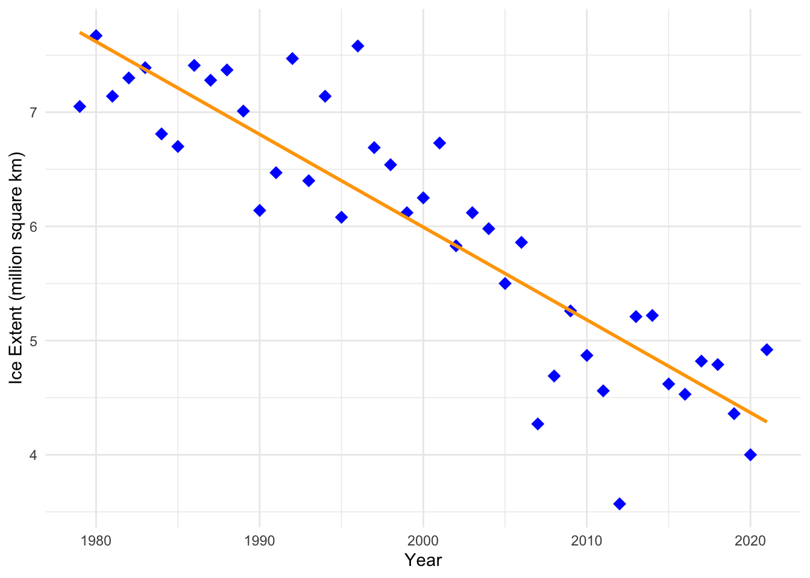

Introduction to importing data, plotting with ggplot, and statistical tests
Introduction
In this tutorial we will start to learn how to do some of the most common tasks that you will perform in R. We will learn how to import a dataset from a csv file, we will perform some simple statistical tests, and we will use ggplot to produce some nice plots.
The document you are reading is a rendered Quarto document, which you should now understand how to create. As you work through this tutorial and others you should be working inside of your own Quarto document (a new one for each tutorial). Your document should have concise headings and text (including an introduction) that are sufficient to help you understand your work when you look back at it later. Your headings and explanatory text should not simply mimic mine, since the purposes of our documents are different. Your code blocks should include the code presented in the tutorial, but it can also include your own explorations and comments as you, for example, play with things like plotting options.
While we are working on tutorials that are aimed at introducing you to R you should continue to work within the project that you set up in tutorial 2 (watershed_R_Intro). That means your next step (if you have not already done so) is to open that project and create a new Quarto document file for your work on this tutorial. Give your file an informative name (with no spaces or special characters except dashes and underscores).
Artic Sea Ice Extent
Sea ice in the arctic typically reaches its minimum extent in September each year. Sea ice extent is defined to be the total area covered that has an ice concentration of at least 15%. NASA has been been using satellites to monitor the sea ice extent in the Arctic since 1978. This NASA website discusses the 2021 minimum sea ice extent. It includes a nice animation showing the decline in sea ice over time. Please read the web page and watch the animation.
We will explore the NASA data set, which lists the annual minimum sea ice extent (in millions of square kilometers) since 1979.
Importing data from a csv file
A csv file contains data in a plain text format with columns separated by commas (csv = comma separated values). You can easily export a csv file from Microsoft Excel or Google Sheets, or you can create one yourself using a text editor. It is also simple to export one from R.
Putting your csv file in the right directory
Remember that we have adopted a standard directory structure for our R projects. We put our code in the code folder, and we put our data in data folders. If we are importing a data set from outside of our project, we will consider it raw data and we will put it in the raw_data folder.
The data we will work with in this tutorial is in the 2485_Sept_Arctic_extent_1979-2021.csv file on the course Moodle page. Download the file and move it into the raw_data directory in your watershed_R_Intro project directory.
You should open the file with Microsoft Excel and then with a text editor (like textEdit on a Mac or Notepad or WordPad on a Windows computer) so that you understand the structure and formate of the data. R ‘sees’ the version that your text editor shows you (or something similar).
Importing the data into R and viewing it
We will use the read_csv function to import the data from the csv file. This function is included in the readr package that is included in the tidyverse package we installed in the last tutorial. In order to use the function, we first need to load the tidyverse package. We do this with the library command.
library(tidyverse)
── Attaching core tidyverse packages ──────────────────────── tidyverse 2.0.0 ──
✔ dplyr 1.1.3 ✔ readr 2.1.4
✔ forcats 1.0.0 ✔ stringr 1.5.0
✔ ggplot2 3.4.3 ✔ tibble 3.2.1
✔ lubridate 1.9.2 ✔ tidyr 1.3.0
✔ purrr 1.0.2
── Conflicts ────────────────────────────────────────── tidyverse_conflicts() ──
✖ dplyr::filter() masks stats::filter()
✖ dplyr::lag() masks stats::lag()
ℹ Use the conflicted package (<http://conflicted.r-lib.org/>) to force all conflicts to become errors
Note that the preceding code block was generated with the code
```{r}library(tidyverse) ```
so you will need to write this in your own Quarto document. The output that follows the code block was generated when the document was rendered (as the code was executed). From this point on I will assume that you realize that you need to start your R code blocks with ```{r} and end them with ``` as we discussed in tutorial 2, and that you can identify R code blocks and output throughout this document.
New names:
Rows: 43 Columns: 8
── Column specification
──────────────────────────────────────────────────────── Delimiter: "," chr
(2): data-type, hemisphere dbl (6): ...1, year, month, extent, area, rank
ℹ Use `spec()` to retrieve the full column specification for this data. ℹ
Specify the column types or set `show_col_types = FALSE` to quiet this message.
• `` -> `...1`
When we read in the data, we give it the name ice_extent so that we can refer to it later. We tell the read_csv function where to find the file by providing it with the path to the file. Here we are using a relative path that should work on your computer if you have set up the project directory structure correctly and have included the appropriate line in the *_quarto.yml* file. That line tells R to treat the watershed_R_Intro project directory as the root directory, so that we can just refer to the file’s location using that directory as our starting point. Within that directory the file is in the raw_data directory, so we specify the path starting with the raw_data directory.
The code we use to import the data is pretty simple because the data set is itself very simple. For more complicated data we often need to give the read_csv function additional information in order to have it read the data in correctly. Don’t forget that you can get help using the read_csv function by entering ?read_csv into the R console.
Let’s look at the ice_extent object we created. As we learned in tutorial 1, we can get R to print information about the object by simply typing its name (and running the code by rendering the document).
ice_extent
# A tibble: 43 × 8
...1 year month `data-type` hemisphere extent area rank
<dbl> <dbl> <dbl> <chr> <chr> <dbl> <dbl> <dbl>
1 0 1979 9 Goddard N 7.05 4.58 33
2 1 1980 9 Goddard N 7.67 4.87 43
3 2 1981 9 Goddard N 7.14 4.44 34.5
4 3 1982 9 Goddard N 7.3 4.43 37
5 4 1983 9 Goddard N 7.39 4.7 39
6 5 1984 9 Goddard N 6.81 4.11 31
7 6 1985 9 Goddard N 6.7 4.23 29
8 7 1986 9 Goddard N 7.41 4.72 40
9 8 1987 9 Goddard N 7.28 5.64 36
10 9 1988 9 Goddard N 7.37 5.36 38
# ℹ 33 more rows
The data we imported are organized into a tibble, which is a type of data frame. R prints information about the tibble in a nice, easy-to-read manner. It tells us the size of the tibble (43 rows, 8 columns), corresponding with the 43 years and 8 variables in the data set. The names of the variables are printed at the tops of the columns. For example, the extent variable is the minimum Arctic sea ice extent in millions of square kilometers. Under the variable name R prints the data type for each variable. stands for character (text) data, stands for double (a way to represent numeric data).
R only prints the first 10 rows of the tibble so that we do not clutter up the screen. Often this is sufficient to understand the nature of the tibble. R will also only print out a limited number of columns. In this case they are all shown, because we don’t have many variables. If there are columns that are not printed, the corresponding variable names and data types will be listed at the bottom of the print out.
We can view just the first few rows of the data set using the head command.
head(ice_extent, 3)
# A tibble: 3 × 8
...1 year month `data-type` hemisphere extent area rank
<dbl> <dbl> <dbl> <chr> <chr> <dbl> <dbl> <dbl>
1 0 1979 9 Goddard N 7.05 4.58 33
2 1 1980 9 Goddard N 7.67 4.87 43
3 2 1981 9 Goddard N 7.14 4.44 34.5
Here, we have asked the head command to show us the first 3 rows of the ice_extent object. An alternative way to do the same thing is to use a pipe. Pipes structure your code to emphasize how data are flowing through a set of commands, and we will use them often in our code. Here is a version using a pipe (%>%).
ice_extent %>%head(3)
# A tibble: 3 × 8
...1 year month `data-type` hemisphere extent area rank
<dbl> <dbl> <dbl> <chr> <chr> <dbl> <dbl> <dbl>
1 0 1979 9 Goddard N 7.05 4.58 33
2 1 1980 9 Goddard N 7.67 4.87 43
3 2 1981 9 Goddard N 7.14 4.44 34.5
This does exactly the same thing as the first method. When a pipe is used the object on the left of the pipe (ice_extent) gets placed into the first argument of the function on the left (head). That is, it gets placed where the dot is in this command head(., 3). Essentially the first argument is hidden (and handled) by the pipe. The advantage of the pipe is that the code looks like how we might think about what is occuring–‘we start with ice_extent data and then print out the first 3 rows’. Pipes become especially useful when we chain multiple commands together.
We can also look at the last several rows of the data using the tail command. Here is a version that uses a pipe.
ice_extent %>%tail(5)
# A tibble: 5 × 8
...1 year month `data-type` hemisphere extent area rank
<dbl> <dbl> <dbl> <chr> <chr> <dbl> <dbl> <dbl>
1 38 2017 9 Goddard N 4.82 3.35 10
2 39 2018 9 Goddard N 4.79 3.35 9
3 40 2019 9 Goddard N 4.36 3.17 4
4 41 2020 9 Goddard N 4 2.83 2
5 42 2021 9 NRTSI-G N 4.92 3.43 12
Which rows will the this command reveal?
ice_extent %>%tail(8) %>%head(2)
# A tibble: 2 × 8
...1 year month `data-type` hemisphere extent area rank
<dbl> <dbl> <dbl> <chr> <chr> <dbl> <dbl> <dbl>
1 35 2014 9 Goddard N 5.22 3.74 14
2 36 2015 9 Goddard N 4.62 3.42 7
This command first pulls the last 8 rows of ice_extent using tail (rows 36-43), then it passes those to head which pulls the first two of those rows. Thus, we are looking at rows 36 and 37 of the ice_extent data.
Another way to format the last command is to take advantage of R’s ability to realize that a command is incomplete and to wait for it to be completed (as we saw in Tutorial 1). With this in mind we can reformat the code as
ice_extent %>%tail(8) %>%head(2)
# A tibble: 2 × 8
...1 year month `data-type` hemisphere extent area rank
<dbl> <dbl> <dbl> <chr> <chr> <dbl> <dbl> <dbl>
1 35 2014 9 Goddard N 5.22 3.74 14
2 36 2015 9 Goddard N 4.62 3.42 7
At the end of the first line, R realizes that the statement is incomplete (there is a pipe that doesn’t lead to anything), so it goes to the next line to complete the statement. It does something similar on at the end of the second line.
What if we want to look at row 23? Do we have to use tail and head? No. We can also refer to rows by number. Specific elements in a tibble can be referred to by their row and column numbers in square brackets. For example, the following code returns a tibble with a single element in it–the data in the row 23 and column 4.
ice_extent[23,4]
# A tibble: 1 × 1
`data-type`
<chr>
1 Goddard
We can pick out the entire 23rd row by leaving out the column number (but keeping the comma). This tells R we want all of the columns.
ice_extent[23,]
# A tibble: 1 × 8
...1 year month `data-type` hemisphere extent area rank
<dbl> <dbl> <dbl> <chr> <chr> <dbl> <dbl> <dbl>
1 22 2001 9 Goddard N 6.73 4.59 30
Try the commands ice_extent[23:25,], ice_extent[c(2,4,6,8),], and ice_extent %>% pull(area). What do they do?
Sometimes we want to view and scroll through the entire data set. Do we have to go to Excel to do this? No! RStudio has a handy data viewer built into it. You can view the data by finding the ice_extent object in the Environment tab and clicking on its name. Try it out!
Plotting the data using ggplot
You have already seen how to plot data using the plot function in base R. This is useful for making quick plots, but we can often make much nicer plots using the tools in the ggplot2 package. This is another package that is part of the tidyverse package. Since we already loaded that package we do not need to do it again.
The structure of the code to build a ggplot plot is more complicated than using the base plot command, and it takes some time to understand the structure. At first it may look like it is not worth it, but we will appreciate the flexibility later (and in particular how easy it is to make complicated plots that look good).
Let’s make a scatter plot of the data (extent vs. year).
ggplot builds a plot one element at a time, starting with an empty plot. The empty plot is initialized with the ggplot command at the top. Additional elements like points and labels are then added to the plot one at a time using a +. When we run the code, R understands there is more to do after each line that ends with a + (it recognizes the incomplete command and looks to the next line).
When we call the ggplot command, we give R some information about the plot we want to build. Later elements inherit this information as needed. The first thing we tell R about the plot is simply that the data will come from the ice_extent object. The second piece of information we give to R is a bit more complicated. We are providing it with a mapping for the plot. The mapping is always an aes object (short for aesthetic), because it affects how the plot will appear. Within this we are telling R to think of year as our x variable and extent as our y variable. Note that these must exactly match the names of the corresponding variables in the ice_extent tibble.
The geom_point command tells R to add points to the plot. We don’t need to tell R anything about how to determine the coordinates of the points, because that information is inherited from the information we provided the ggplot command.
The last two elements are our x and y labels.
With this structure, we can very easily modify or add plot elements. For example, we can add a regression line using the geom_smooth command.
Inside of the geom_smooth command we specify that it should use the ‘lm’ method (a line), and that it should not show confidence intervals around the line (se = FALSE).
We can easily change the appearance of our plot in ggplot. Here is a simple example.
ggplot(data = ice_extent, mapping =aes(x = year, y = extent)) +geom_point(color ="blue", shape =18, size =3.5) +geom_smooth(method ='lm', se =FALSE, color ="orange") +xlab("Year") +ylab("Ice Extent (million square km)") +theme_minimal()
`geom_smooth()` using formula = 'y ~ x'

Linear regression analysis
We can fit a regression line to the data and determine if there is a statistically significant correlation between ice extent and year using the lm command in R. It is possible to run a Pearson’s correlation test separately using the cor.test command. The lm command runs a significance test using the slope instead of the correlation, but the two tests are equivalent so I tend to just use lm.
To fit a linear model using the lm function we can use the following code.
lm_extent <-lm(extent ~ year, data = ice_extent)
Give the model a name lm_extent so we can refer to it later. The first argument of the lm function is a formula. The formulaextent ~ year has the form y ~ x. It tells R that we want to fit a linear model for the extent variable in terms of the year variable. That is, we are treating extent as our y variable and year as our x variable. We also tell the lm command that the data are in the ice_extent tibble.
We can get some information about the linear model by just typing lm_extent.
lm_extent
Call:
lm(formula = extent ~ year, data = ice_extent)
Coefficients:
(Intercept) year
168.43988 -0.08122
The print out tells us how we set up the model, and it gives us the model coefficients. This tells us that the equation for the regression line is \[\text{extent} = -0.08122\cdot \text{year} + 168.43988\]
Thus, the slope is -0.08122, telling us that each year, the ice extent is predicted to decrease by 81,220 \(km^2\).
Note that this is the same regression line that we added to the scatter plot above using geom_smooth (remember we told R to use method ‘lm’).
We can get even more information about the linear model if we ask R for a summary of the model using the summary command.
lm_extent %>%summary()
Call:
lm(formula = extent ~ year, data = ice_extent)
Residuals:
Min 1Q Median 3Q Max
-1.44881 -0.31543 0.01572 0.33263 1.26162
Coefficients:
Estimate Std. Error t value Pr(>|t|)
(Intercept) 168.439879 12.943523 13.01 3.80e-16 ***
year -0.081223 0.006472 -12.55 1.25e-15 ***
---
Signif. codes: 0 '***' 0.001 '**' 0.01 '*' 0.05 '.' 0.1 ' ' 1
Residual standard error: 0.5266 on 41 degrees of freedom
Multiple R-squared: 0.7935, Adjusted R-squared: 0.7884
F-statistic: 157.5 on 1 and 41 DF, p-value: 1.252e-15
The same coefficients as before are listed in the Coefficients table in the summary (in the Estimate column). However, this time p-values are listed for the coefficients (in the Pr(>|t|)) column). We are particularly interested in the p-value for the slope (the coefficient for year). This is the same p-value that we would obtain from a correlation test.
Since the p-value is very small (essentially 0), the test is significant, and there is very strong evidence of a linear association between ice extent and year.
The summary also tells us that \(R^2 = 0.7884\). Thus about 79% of the variability in ice extent is explained by its linear relationship with year.
As with many things in R, there are multiple ways to extract what we need from the analysis.
Here is a ‘tidier’ way to get the information that makes heavier use of pipes and the tidy function from the broom package. This function puts the information from the Coefficients table into a nicer format (a tibble). The results are easy to read and extract information from using commands. Although the broom package is considered part of the Tidyverse it is not loaded when the tidyverse package is loaded, so we need to load it with the library command.
library(broom)lm_tib <- ice_extent %>%lm(extent ~ year, data = .) %>%tidy()lm_tib
# A tibble: 2 × 5
term estimate std.error statistic p.value
<chr> <dbl> <dbl> <dbl> <dbl>
1 (Intercept) 168. 12.9 13.0 3.80e-16
2 year -0.0812 0.00647 -12.6 1.25e-15
Often we will want to change the format of a printed table in R. Often the default printed output will have more or fewer decimal places than we want to show. We may also want to control the appearance of the table in other ways. The kableExtra package includes tools for formatting tables in R output, including rendered html files.
The kbl function does most of the work for us. This is what the table looks like if we format it with the kbl function using default values for options.
library(kableExtra)lm_tib |>kbl()
term
estimate
std.error
statistic
p.value
(Intercept)
168.4398792
12.9435225
13.01345
0
year
-0.0812232
0.0064716
-12.55064
0
We can easily specify the number of digits for numeric columns.
lm_tib |>kbl(digits =3)
term
estimate
std.error
statistic
p.value
(Intercept)
168.440
12.944
13.013
0
year
-0.081
0.006
-12.551
0
Checkout the documentation for the kbl function to learn more about it (?kbl).